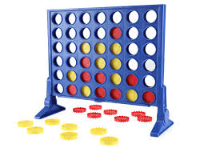

Onshape Rain Shed design/h2>

Designed an automatic attachable rain cover in onshape, aswell as working prototype that was one of two projects selected to represent MUN Engineering at the 2025 Canada Games.
Skills Used: CAD modeling, assemblies, constraints, motion analysis, problem solving, teamwork, programming in python.
Connect Four Game (Python)
Built a console-based Connect Four game in Python as part of a programming assignment. Focused on logical structure, input validation, and formatted output for a clean user experience.
Skills Used: Python programming, loops, functions, modular code